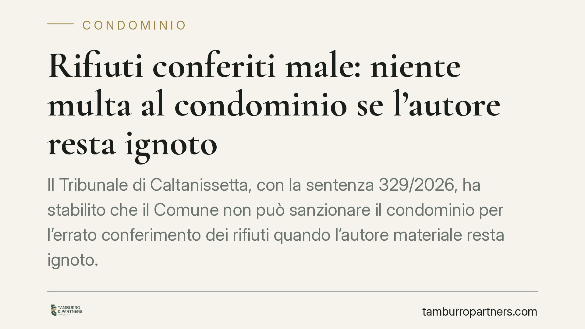

Rifiuti conferiti male: niente multa al condominio se l'autore resta ignoto
Il Tribunale di Caltanissetta, con la sentenza 329/2026, ha stabilito che il Comune non può sanzionare il condominio per l'errato conferimento dei rifiuti quando l'autore materiale resta ignoto. Decade così la pretesa di una responsabilità oggettiva legata al semplice possesso dei mastelli ricevuti in comodato. Una pronuncia che incide direttamente sulla gestione della raccolta differenziata negli edifici.

Il caso
Un Comune aveva notificato al condominio una sanzione amministrativa per il conferimento scorretto dei rifiuti: materiali differenziati in modo errato, trovati nei contenitori assegnati all'edificio. L'ente locale aveva individuato il responsabile nel condominio stesso, sulla base del fatto che i mastelli erano stati consegnati all'amministratore in comodato d'uso.
Il Tribunale di Caltanissetta (sentenza n. 329/2026) ha annullato la sanzione. Il punto centrale: non basta che i contenitori siano intestati al condominio per attribuirgli la violazione. Occorre individuare chi ha materialmente conferito male i rifiuti.
Inquadramento normativo
La decisione poggia sui principi generali dell'illecito amministrativo fissati dalla Legge 689/1981.
L'articolo 3 stabilisce che, per le violazioni amministrative, la responsabilità richiede un comportamento cosciente e volontario, doloso o colposo. In altre parole: serve una condotta attribuibile a un soggetto, non la mera titolarità di un bene. Il nostro ordinamento, salvo eccezioni espresse, non ammette forme di responsabilità oggettiva pura in materia sanzionatoria.
L'articolo 6 disciplina la solidarietà: il proprietario della cosa o chi ne ha l'uso risponde in solido con l'autore della violazione, ma solo quando l'autore sia stato identificato. La solidarietà è un meccanismo di garanzia del pagamento, non un modo per creare un responsabile dal nulla. Se manca l'autore materiale, manca il presupposto stesso dell'obbligazione solidale.
Da qui la conclusione del Tribunale: il possesso dei mastelli ricevuti in comodato non trasforma il condominio in responsabile automatico di ogni errore di conferimento.
Perché la responsabilità oggettiva è esclusa
Il comodato d'uso è il contratto con cui il Comune affida gratuitamente i contenitori per la raccolta. Da questo rapporto discende l'obbligo di custodire e restituire i beni, non quello di garantire la correttezza di ogni singolo conferimento effettuato da chiunque.
In un condominio accedono ai contenitori più soggetti: proprietari, inquilini, familiari, talvolta anche estranei. Attribuire al condominio la responsabilità per il comportamento di tutti costoro significherebbe introdurre una responsabilità oggettiva priva di base normativa.
Il Comune, per sanzionare validamente, deve provare chi ha commesso la violazione. L'onere della prova grava sull'amministrazione procedente.
Implicazioni pratiche
Per l'amministratore di condominio la pronuncia offre un argomento difensivo solido contro le contestazioni generiche. Un verbale che indica il condominio come responsabile, senza identificare l'autore materiale, è esposto a impugnazione.
Per i condòmini resta però un avvertimento: l'esclusione della responsabilità condominiale non significa impunità. Se il Comune individua il singolo trasgressore — ad esempio tramite tracciamento dei mastelli, telecamere o testimonianze — la sanzione colpisce direttamente quella persona.
Per il Comune la sentenza conferma che le ordinanze e i regolamenti locali non possono derogare ai principi della Legge 689/1981. Un regolamento comunale non può istituire una responsabilità oggettiva in capo al condominio in contrasto con la norma statale.
Resta aperto il tema della gestione interna: l'amministratore non ha poteri di vigilanza paragonabili a quelli di un controllore pubblico, e questo rafforza la posizione difensiva dell'ente condominiale.
Cosa fare in concreto
- Verificate il verbale: controllate se la sanzione individua l'autore materiale della violazione. Se indica genericamente il condominio, l'atto è contestabile.
- Conservate la documentazione del comodato: il contratto con il Comune e i verbali di consegna dei mastelli servono a definire con esattezza gli obblighi assunti.
- Impugnate nei termini: l'opposizione alla sanzione amministrativa va proposta entro i termini di legge; un ritardo rende l'atto definitivo e non più discutibile.
- Sensibilizzate i condòmini: una comunicazione interna sulle regole di conferimento riduce gli errori e documenta la diligenza dell'amministrazione.
- Valutate il regolamento comunale: consigliamo di verificare se contiene clausole di responsabilità oggettiva potenzialmente illegittime, da eccepire in sede di opposizione.
Un orientamento da monitorare
La decisione del Tribunale di Caltanissetta si colloca nel solco dei principi consolidati sull'illecito amministrativo. Pur trattandosi di una sentenza di merito, offre una lettura coerente con la Legge 689/1981 e un riferimento utile per contestare le sanzioni automatiche. Ogni caso va comunque esaminato alla luce del verbale specifico e del regolamento comunale applicabile.
---
*Contributo informativo a cura di Tamburro & Partners - Avv. Giuseppe Tamburro. Non costituisce parere legale.*
Ogni condominio ha una storia a sé.
Se gestisci un'amministrazione e vuoi un confronto su una specifica questione condominiale, scrivi allo studio. Ti rispondiamo entro un giorno lavorativo.